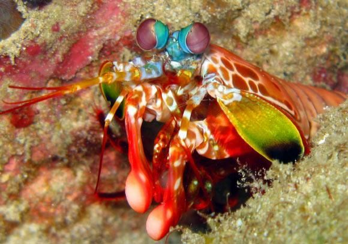
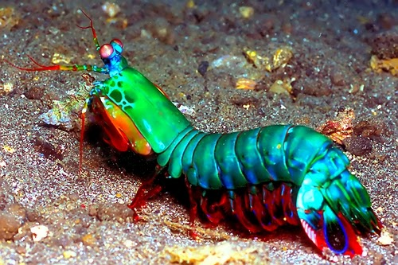

Fatos sobre o Stomatopoda
- Nome Científico: Odontodactylus scyllarus
- Reino: Animalia
- Filo: Arthropoda
- Subfilo: Crustacea
- Classe: Malacostraca
- Subclasse: Hoplocarida
- Ordem: Stomatopoda Latreille
Curiosidades
Olhos
Capaz de enxergar certa de 1 septilhão de cores
Pacifista
Diversas veses é visto parando brigas entre animais menores como carangeijos e siris
- wikipedia
- theoamtmeal